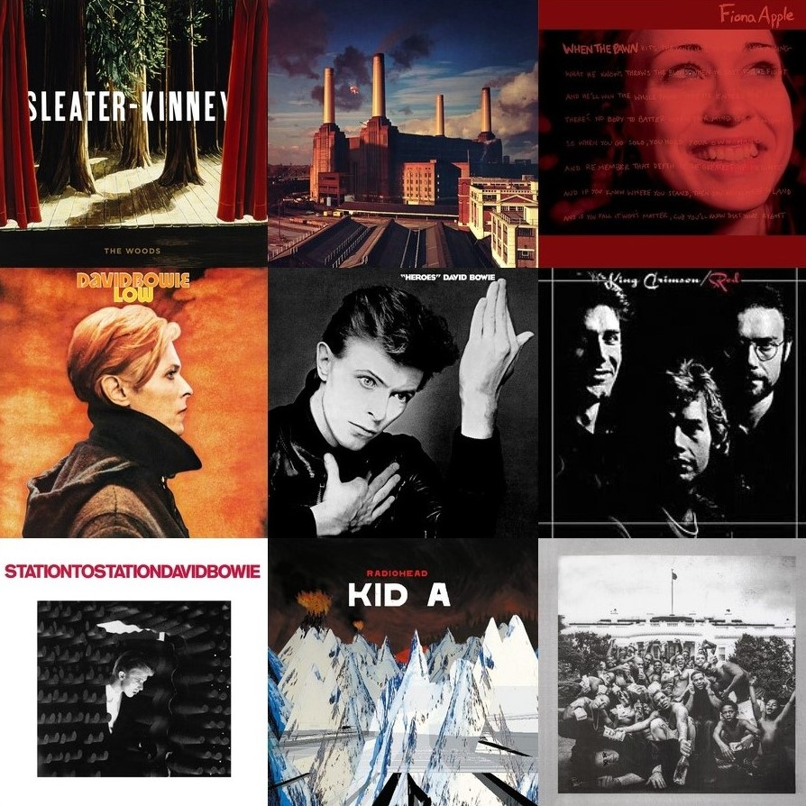

Music
I began diving into music and listening to albums from front-to-back in 2017, and I've quickly fallen in love with a ton of albums/artists. I enjoy talking about music, and I've got a ton of opinions, so hopefully you enjoy my endless rambling. You can check out best to worst lists and reviews I've done for certain artists, or check out my write-ups of my favorite albums.
